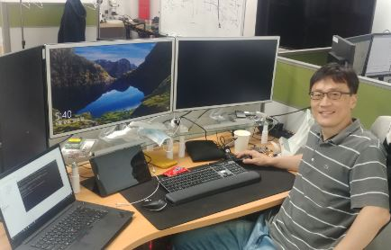
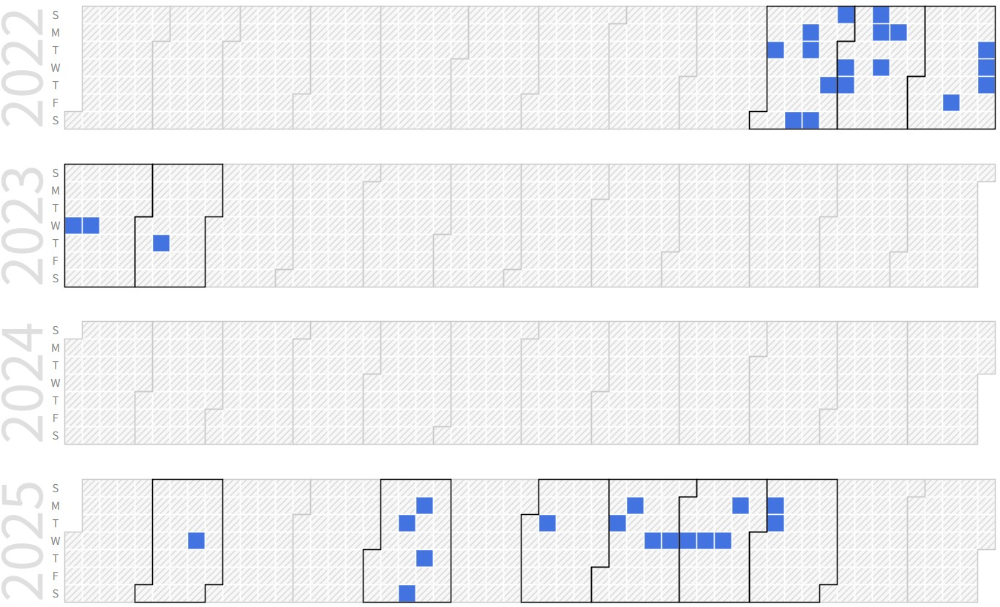

Seongho Cho (M.S. Student, Senior Engineer in LG Display)
|  | M.S. Student, Senior Engineer in LG Display |
Repository Commit History
|  |
Introduction
Full Bio Sketch
Mr. Cho is now with LG Display as senior researcher, developing display and touch device controller including F/W for automotive. He is pursuing toward his M.S degree in school of Electronics Engineering at Kyungpook National university, Daegu, Korea. He has worked on circuit design and performance verification for capacitive type in-cell touch from 2012 to 2018. His research interests include the robust circuit design and highly reliable and low power self diagnostic architecture for automotive display device for ASIL.
Research Topic
 The Intra-Body Communication (IBC) benefits from a wireless communication system for exchanging various kinds of digital information through wearable electronic devices and sensors. The IBC using the human body as the transmission channel allows wireless communication without the transmitting radio frequency waves to the air. This paper discusses the results of experiments on secure personal authentication using electrostatic coupling IBC based on frequency shift keying (FSK) and binary data encryption technique. In order to enhance security we applied binay data encryption method, which is data rndom inversion and de-inversion technique based on a cycle redundancy check (CRC) for secure hash algorithm (SHA)-based binay data with 1 bit error correction code (ECC). We implemented and verified these features using the MCU boards and aluminum tape electrodes. The transmitter modulates encrypted binary data using 50% duty square wave as carrier signal and transmits data through the human body. The receiver demodulates received signal from the human body using analog to digital Converison (ADC) and decrypts the demodulated binary data. In order to figure out the frequency of carrier signal from ADC results, we applied zero-crossing algorithm which is used to detect the edge characteristic in computer vision. Experiment results shows that encrypted binary data modulated as square wave can be successfully transmitted through human body by applying the proposed architecture of a 1ch GPIO as a transmitter and 1ch ADC for as a receiver. In addition, we propose 1 bit error correction method for reliable IBC system. This technique performs error correction by utilizing the feature that carrier signal has 50% duty ratio. When 1 bit error correction technique is applied, the byte error rate at receiver side is improved around 3.5% compared to that not applied.
The Intra-Body Communication (IBC) benefits from a wireless communication system for exchanging various kinds of digital information through wearable electronic devices and sensors. The IBC using the human body as the transmission channel allows wireless communication without the transmitting radio frequency waves to the air. This paper discusses the results of experiments on secure personal authentication using electrostatic coupling IBC based on frequency shift keying (FSK) and binary data encryption technique. In order to enhance security we applied binay data encryption method, which is data rndom inversion and de-inversion technique based on a cycle redundancy check (CRC) for secure hash algorithm (SHA)-based binay data with 1 bit error correction code (ECC). We implemented and verified these features using the MCU boards and aluminum tape electrodes. The transmitter modulates encrypted binary data using 50% duty square wave as carrier signal and transmits data through the human body. The receiver demodulates received signal from the human body using analog to digital Converison (ADC) and decrypts the demodulated binary data. In order to figure out the frequency of carrier signal from ADC results, we applied zero-crossing algorithm which is used to detect the edge characteristic in computer vision. Experiment results shows that encrypted binary data modulated as square wave can be successfully transmitted through human body by applying the proposed architecture of a 1ch GPIO as a transmitter and 1ch ADC for as a receiver. In addition, we propose 1 bit error correction method for reliable IBC system. This technique performs error correction by utilizing the feature that carrier signal has 50% duty ratio. When 1 bit error correction technique is applied, the byte error rate at receiver side is improved around 3.5% compared to that not applied.
Publications
Journal Publications
Seongho Cho and Daejin Park. Electrostatic Coupling Intra-Body Communication Based on FSK Communication and Error Correction IEMEK Journal of Embedded Systems and Applications, 15(4):159-166, 2020.
Seongho Cho, Sejong Oh, and Daejin Park. Robust Intra-Body Communication using SHA-ECC-CRC Inversion-based Frequency Shft Keying for Securing Electronic Authentication Sensors, 20(21):6056-6073, 2020.
Conference Publications
Seongho Cho and Daejin Park. Electrostatic Coupling Intra-Body Communication Based on Frequency Shift Keying and Error Correction for Asynchronous Clock-less IoT Applications In The International Conference on Big data, IoT, and Cloud Computing (BIC-20), 2020.
Seongho Cho and Daejin Park. FSK Communication and Error Correction Technique for Robust Electrostatic Coupling Intra-Body Communication In IEEE Global Conference on Consumer Electronics 2020.
Patents
Liquid crystal display of field sequential color type and method for driving the same In US Patent and Tradmark Office
In-cell touch type liquid crystal display device and method for driving the same In US Patent and Tradmark Office
Participation in International Conference
BIC 2020, Jeju, Korea
IEEE GCCE 2020, Osaka, Japan